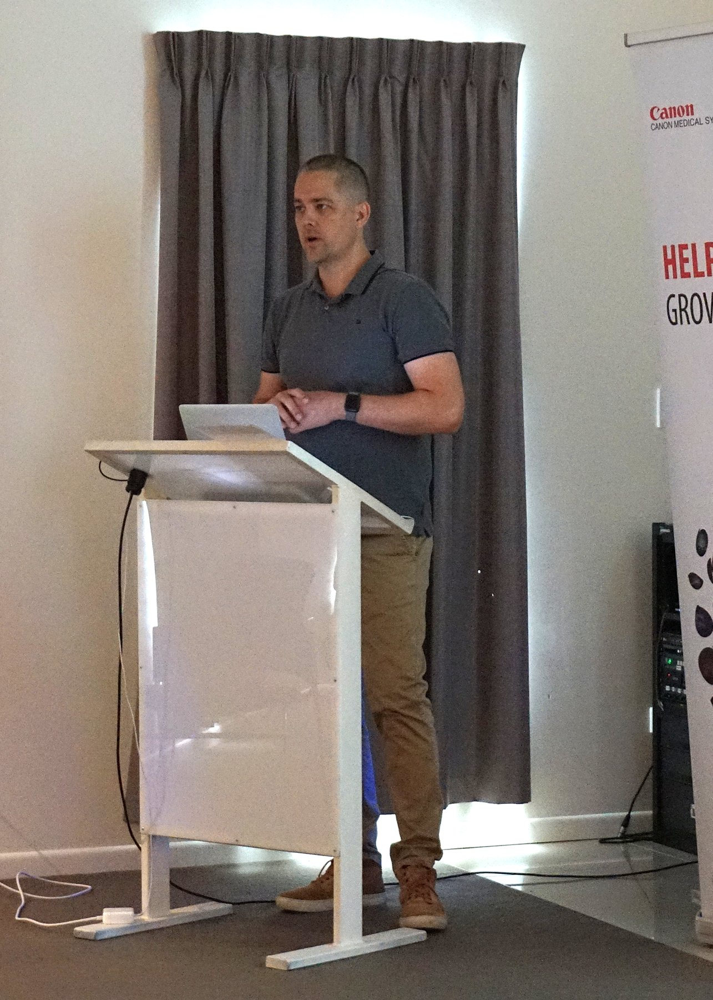
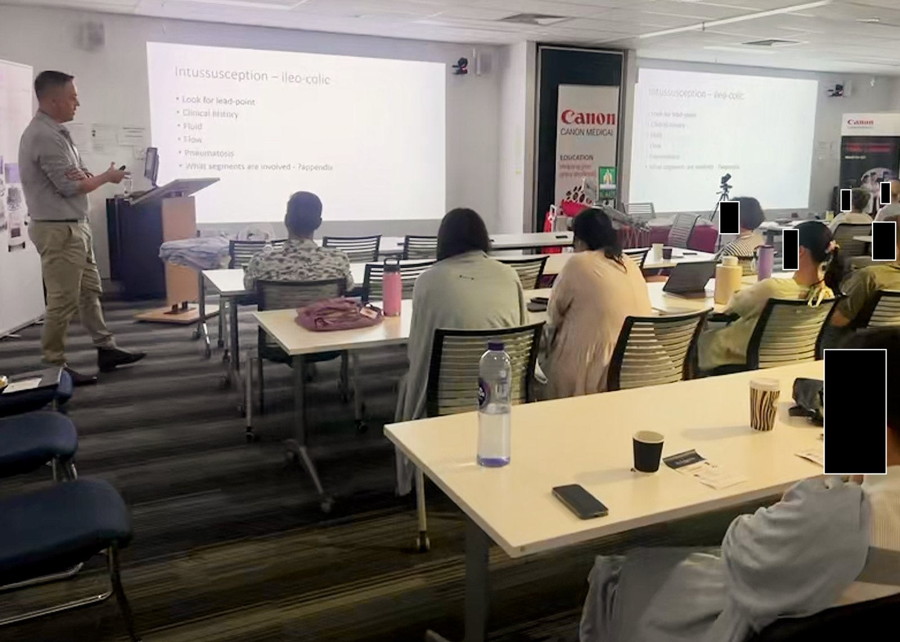
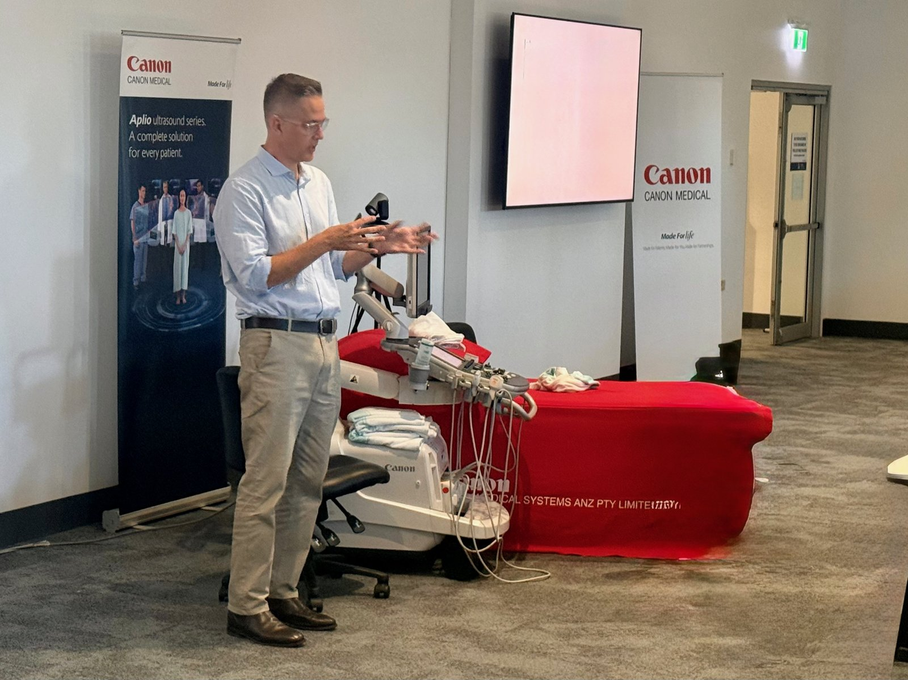
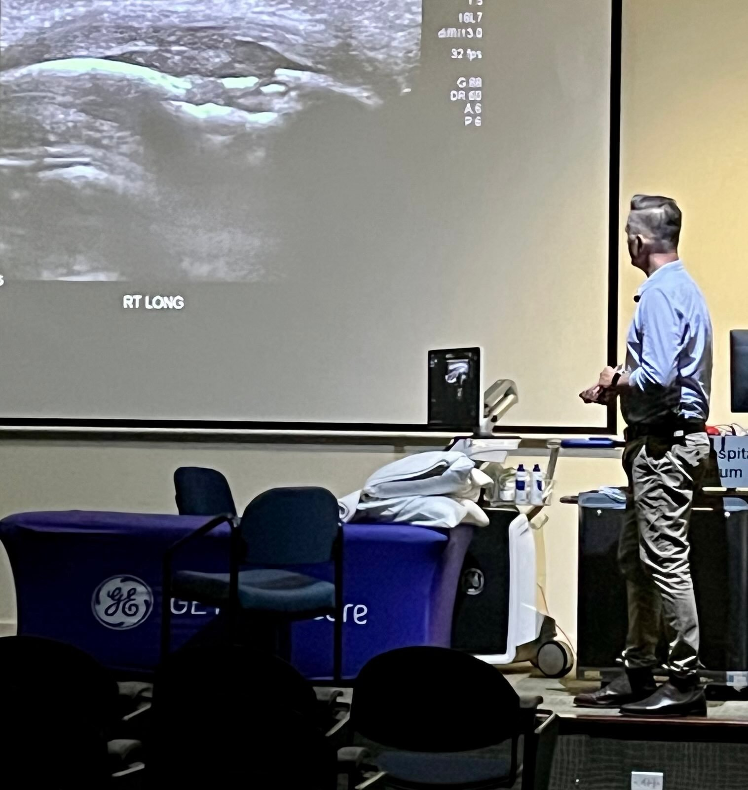
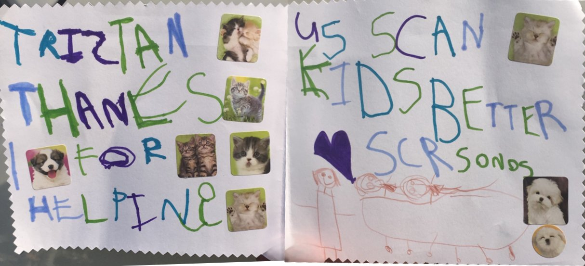

Paediatric ultrasound education for sonographers, in the room and online.
Since 2016 I have taken paediatric ultrasound education to regional and rural sites in Queensland and northern New South Wales, shaped by audit evidence on where support is most needed. At each meeting I offer my contact details so that colleagues feel able to ask for advice on particular cases. The audit behind these sessions is described in the research case study.
Workshops, webinars and lectures, with local context.
Education sessions for sonographers and radiographers, in regional, rural and metropolitan settings and online, listed with estimated reach, the size of the local sonography workforce, and the First Nations share of the local population (ABS 2021 Census).
The workforce and population context is included to show the scale and geographic setting of regional education activity; it is not intended to imply that attendance alone demonstrates clinical impact.
| Year | Location | Audience | Topic | Organiser | Format | Est. reach | Local sonography workforce pool | Reach as % of pool | First Nations catchment | vs national avg (3.2%) |
|---|---|---|---|---|---|---|---|---|---|---|
| 2026 | Online (ANZ) | Sonographers (ANZ) | Paediatric appendix ultrasound | Canon Medical | Webinar | TBC | n/a | n/a | n/a | n/a |
| 2026 | Brisbane (Metro) | State-wide Queensland Health medical radiation practitioners | Circle of Willis ultrasound | Children's Health Queensland | Face-to-face and online lecture | ~90 | ~20 (SEQ QH sonographers; Brisbane LGA 486) | >100%, state-wide audience exceeds local pool | ~3% | ~1× |
| 2026 | Lismore, NSW | Northern NSW and Gold Coast sonographers | Paediatric ultrasound | Canon Medical | Half-day workshop | ~20 to 25 | 42 (Ballina, Byron, Lismore, Richmond Valley, Tweed) | ~48 to 60% | ~8 to 10% | 2.5 to 3× |
| 2025 | Cairns Hospital | Cairns region sonographers | Paediatric ultrasound | GE Healthcare | Half-day workshop | ~20 to 30 | 59 (Cairns, Mareeba, Cassowary Coast) | ~34 to 51% | ~11 to 12% | 3.5 to 4× |
| 2025 | Sunshine Coast University Hospital | Sunshine Coast sonographers | Paediatric ultrasound | Philips Healthcare | Half-day workshop | ~20 to 25 | 135 (Sunshine Coast, Noosa, Gympie) | ~15 to 19% | ~3 to 4% | ~1× |
| 2025 | Rockhampton Hospital | Central Queensland sonographers | Paediatric ultrasound | Canon Medical | Half-day workshop | ~25 to 30 | 40 (Rockhampton, Livingstone, Central Highlands, Gladstone) | ~63 to 75% | ~14 to 18% | 4 to 6× |
| 2023 | Brisbane (Metro) | Metro Brisbane sonographers | Paediatric ultrasound | iMed Radiology | Half-day workshop | ~30 to 40 | 486 (Brisbane LGA) | ~6 to 8% | ~3% | ~1× |
| 2023 | Regional Victoria | Regional Victorian sonographers | Paediatric ultrasound | Vision Radiology | Webinar | ~50 to 100 | n/a | n/a | n/a | n/a |
| 2022 | Online (national) | Australasian sonographers | Biliary atresia: ultrasound diagnosis | ASUM | Webinar | ~30 | n/a | n/a | n/a | n/a |
| 2021 | Hervey Bay Hospital | Fraser Coast sonographers | Paediatric ultrasound | Canon Medical | Half-day workshop | ~20 to 25 | 57 (Fraser Coast, Bundaberg, Gympie) | ~35 to 44% | ~8 to 10% | 2.5 to 3× |
| 2021 | Rockhampton | Central Queensland sonographers | Paediatric ultrasound | ASA | Travelling workshop | ~25 to 30 | 40 (Rockhampton, Livingstone, Central Highlands, Gladstone) | ~63 to 75% | ~14 to 18% | 4 to 6× |
| 2019 | Brisbane | Sonographers, national ASA conference attendees | Hip ultrasound (DDH) | Canon Medical ANZ | Pre-conference seminar | ~50 | 486 (Brisbane LGA) | ~10% | ~3% | ~1× |
| 2019 | Sunshine Coast | Sunshine Coast sonographers | Pylorus and DDH | Imaging Queensland | Half-day workshop | ~20 to 25 | 135 (Sunshine Coast, Noosa, Gympie) | ~15 to 19% | ~3 to 4% | ~1× |
| 2019 | Toowoomba Hospital | Toowoomba sonographers | Paediatric ultrasound | Canon Medical | Evening workshop | ~25 to 35 | 69 (Toowoomba, Southern Downs, Western Downs, South Burnett) | ~36 to 51% | ~6 to 7% | ~2× |
| 2019 | Ballina, NSW | Northern NSW and Gold Coast sonographers | Paediatric ultrasound | Canon Medical | Half-day workshop | ~15 to 20 | 42 (Ballina, Byron, Lismore, Richmond Valley, Tweed) | ~36 to 48% | ~8 to 12% | 2.5 to 4× |
| 2019 | Brisbane | Medical imaging nurses | Paediatric ultrasound | MINA | Lecture | ~30 to 50 | n/a | n/a | ~3% | ~1× |
| 2017 | Online (national) | Australasian sonographers | Paediatric appendicitis: ultrasound | ASA | Webinar | 595 views | n/a | n/a | n/a | n/a |
| 2016 | Sunshine Coast | Sunshine Coast sonographers | Paediatric ultrasound | Sunshine Coast Radiology | Half-day workshop | ~20 | 135 (Sunshine Coast, Noosa, Gympie) | ~15% | ~3 to 4% | ~1× |
| 2010 | Brisbane | Brisbane radiographers | Cranial ultrasound | ASMIRT Qld | Lecture | ~30 to 50 | 486 (Brisbane LGA) | ~6 to 10% | ~3% | ~1× |
| Total | 19 events, 2010 to 2026 | ~520 to 675 attendees, plus 595 webinar views (2017); 2026 webinar to be added | 6 unique regional pools, combined pool of 402 | ~52 to 66% of combined regional pool (excluding Brisbane and webinars) | 6 to 18% range across regional events | Up to 6× at highest-reach locations | ||||
Local pool figures are ABS 2021 Census sonographer counts by local government area of place of work, used as a proxy for the accessible regional workforce. Webinar audiences may draw from several regions. First Nations catchment proportions are from the 2021 Census, against a national average of 3.2% and a Queensland average of 4.6%. The ABS notes that small cell values are subject to random adjustment for confidentiality. Shading: darker teal is above 10% First Nations catchment; lighter teal is 6 to 10%; unshaded is below the Queensland average.
Regional access and tele-ultrasound
In 2019 I received a Children's Hospital Foundation Working Wonders grant to investigate and develop a statewide telehealth model for paediatric ultrasound support. The funding supported an audit of regional transfers and the development of a framework for the service. The planned service did not gain momentum during the COVID-19 period.
The need has not gone away, and it has stayed a focus of my work. Alongside face-to-face regional education, I offer informal remote clinical support, and I am now exploring contemporary secure tele-ultrasound platforms.
What matters to me is the sustained effort to connect specialist paediatric ultrasound expertise with clinicians outside a tertiary children's hospital, rather than the success of any one technology or vendor.
The audit, in the research case study · The grant, under recognition
Gallery




